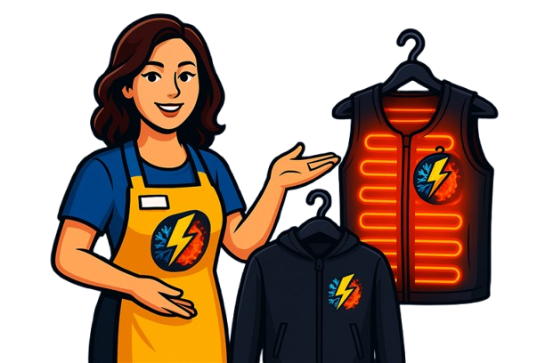

A Fashion Technology LTDA é uma empresa inovadora que une moda e tecnologia para transformar o setor têxtil. Com foco em pesquisa, inovação e sustentabilidade, desenvolvemos soluções inteligentes que conectam estilo, funcionalidade e tecnologia.
Atuamos no desenvolvimento de roupas tecnológicas, tecidos inteligentes e consultoria especializada em moda digital. Acreditamos que o futuro da moda está na integração entre design e tecnologia, e por isso buscamos sempre estar à frente das tendências do mercado.
Nosso compromisso é entregar inovação com qualidade, criando experiências únicas para consumidores e empresas do setor.

Roupas Térmicas Inteligentes:
Conforto e Segurança o Ano Todo!
Você trabalha sob sol forte no verão e enfrenta o frio no inverno?
Chegou a solução ideal: roupas térmicas
inteligentes!
Para quem são?
Perfeitas para trabalhadores da construção civil, agricultura, logística, mineração, segurança, transporte e outros setores que lidam com variações de temperatura.
Como funcionam?
Essas roupas se adaptam ao clima automaticamente:
Esquentam no frio com materiais isolantes e até sensores térmicos;
Refrescam no calor, liberando calor e umidade do corpo;
Mantêm o conforto o dia inteiro, sem necessidade de trocar de roupa;
Benefícios para o trabalhador:
Mais conforto e bem-estar;
Menos cansaço e mais produtividade;
Proteção contra hipotermia e desidratação;
Compatíveis com EPIs;
Economia de tempo e praticidade;
Benefícios para a empresa:
Redução de afastamentos por problemas de saúde;
Colaboradores mais focados e satisfeitos;
Imagem moderna e preocupação com o bem-estar da equipe;